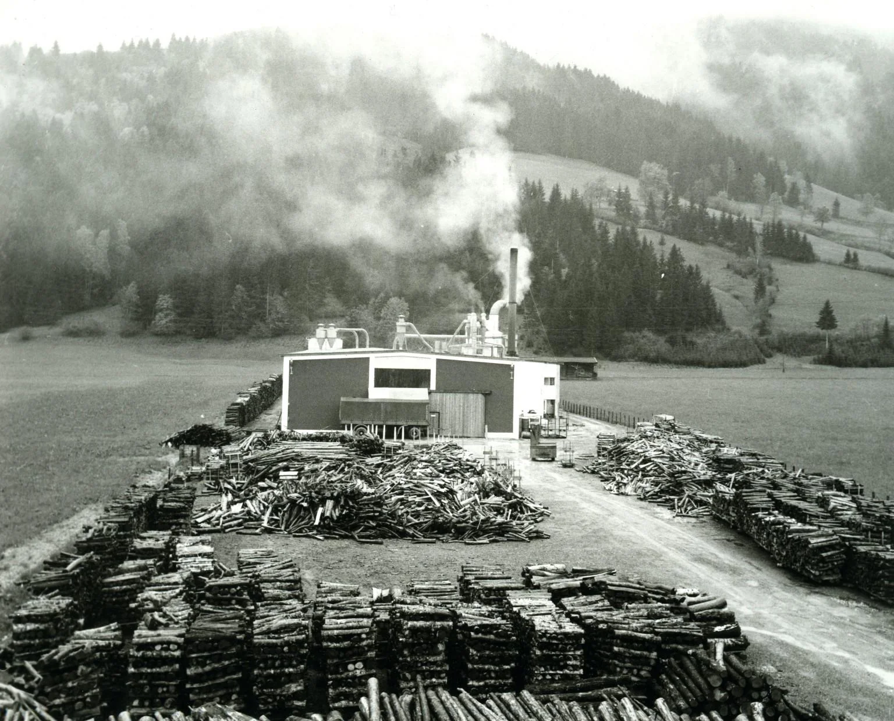
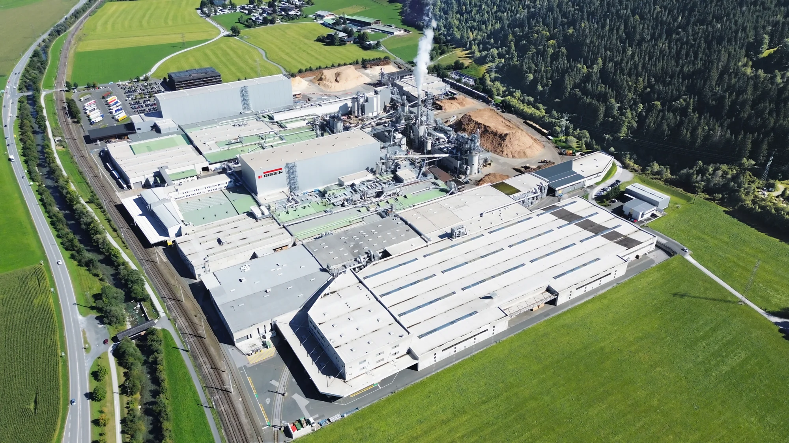
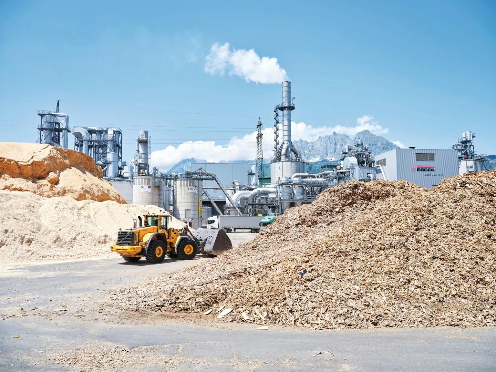
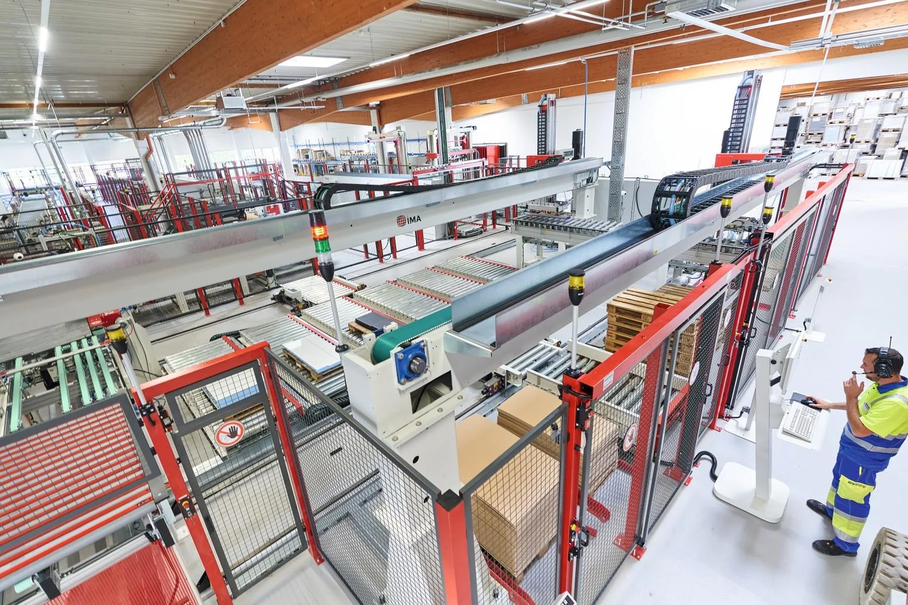
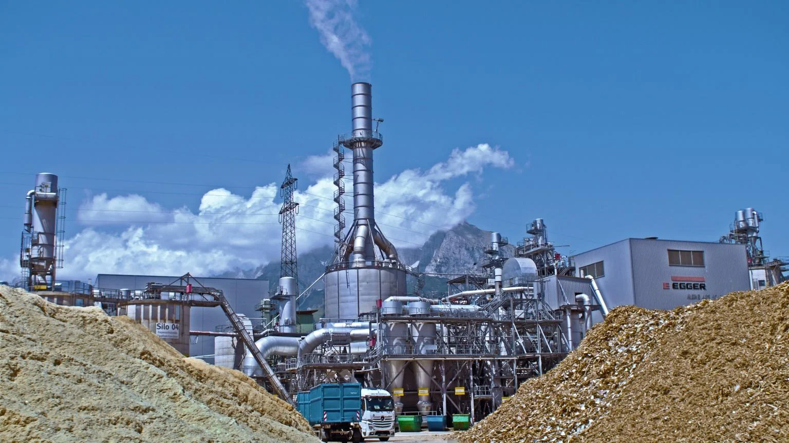

У пола есть две истории. Одну мы видим каждый день: рисунок дуба, мягкий оттенок, свет у окна. Другая начинается задолго до ремонта — с древесины, инженерных решений и людей, которые превращают материал в готовую панель.
Чтобы познакомиться с EVERSENSE ближе, стоит заглянуть именно в эту вторую историю. Она соединяет австрийский Тироль, международную группу EGGER и завод в Гагарине. А заканчивается вполне практичными вопросами: кто изготовил покрытие, как проверены его характеристики и к кому обратиться за ответом.
Семейная история с европейскими корнями
В 1961 году Фриц Эггер-старший основал предприятие в Санкт-Йоханне-ин-Тироль, Австрия. С этого небольшого европейского города началась история группы, которая работает с древесными материалами для мебели, строительства и напольных покрытий. EGGER и сегодня представляет себя как семейную компанию. [1]
В этой преемственности есть важная для покупателя мысль: за материалом стоит производственная школа, накопленная за десятилетия. Работа с древесиной требует понимать её характер — структуру, влажность, поведение под давлением и при изменении окружающих условий. Именно такие знания связывают отдельную панель с гораздо более длинной историей.


Группа выросла за пределы Австрии. На официальной карте EGGER рядом с европейскими предприятиями представлены площадки в других регионах мира, включая Гагарин. Так европейские корни получают продолжение в международной сети заводов, технологий и специалистов. [1]
Европейские корни. Международная группа. Конкретный завод в Гагарине.
Эти три факта помогают точно понимать происхождение EVERSENSE. Европейская история производителя и место изготовления покрытия — разные уровни одной истории. Для покупателя в Беларуси особенно ценно, что оба можно проверить по открытым источникам и документам.
Гагарин: точка на карте с именем изготовителя
EVERSENSE выпускает ООО «ЭГГЕР ДРЕВПРОДУКТ ГАГАРИН». В документах изготовителя указан адрес: Смоленская область, город Гагарин, Эжвинский проезд, 1. Бренд EVERSENSE прямо назван в декларации пожарной безопасности на ламинированные напольные покрытия. Это связывает красивое торговое имя с конкретным производством и юридическим лицом. [2]
Указание завода — первая точка доверия. Покупка становится понятнее, когда можно сопоставить название на упаковке, изготовителя в документах и выбранный артикул. В этой цепочке есть место и дизайну, и формальным сведениям: они отвечают на разные, одинаково важные вопросы.
Предприятие в Гагарине вошло в группу EGGER в 2011 году. В технической истории ANDRITZ описана модернизация 2015–2016 годов: новая линия древесноволокнистых плит выпустила первую плиту 4 апреля 2016 года. Это один из этапов развития собственной производственной основы. [3]
На фотографии с воздуха хорошо виден масштаб площадки. Корпуса, инфраструктура и производственные территории складываются в целую систему. За готовой доской стоит длинная последовательность операций, и качество зависит от того, насколько согласованно они работают.
- 1961
- Начало истории EGGER в австрийском Тироле.
- Гагарин
- Производственная площадка EGGER и изготовитель EVERSENSE.
- 34 класс
- EVERSENSE 8 мм в техническом свидетельстве ТС 06.2282.25.
До рисунка дуба — работа с древесиной

Мы выбираем пол глазами, но его повседневная работа начинается внутри. EVERSENSE — ламинированное покрытие на древесной плите. Декоративная поверхность отвечает за рисунок и впечатление от интерьера; основа и соединения помогают панели выполнять свою конструктивную задачу.
О подготовке древесного волокна в Гагарине рассказывает техническая публикация поставщика оборудования ANDRITZ 2019 года. В его материале описаны промывка щепы, подготовка волокна, обучение операторов и работа водного контура. Это редкая возможность увидеть производственную историю на уровне конкретного участка. [3]
Промывка щепы звучит как незаметная технологическая деталь. Но именно с таких деталей начинается предсказуемость материала: сырьё проходит последовательную подготовку, прежде чем стать частью плиты. Для владельца квартиры весь этот путь остаётся за кадром. Его результат встречает человека уже в готовом полу.
Другой важный сюжет — обращение с ресурсами. В описании ANDRITZ для участка подготовки волокна в Гагарине отмечен замкнутый водный цикл. Это конкретное инженерное решение на конкретной стадии производства. Такие примеры позволяют говорить об ответственности предметно, через устройство процессов. [3]

У качества много участников
Подготовка сырья, настройка оборудования, работа операторов и проверка материала образуют общую последовательность. Поэтому в истории производства важны одновременно технология и люди, которые умеют с ней работать.
Европейские методы. Измеримые результаты.
Разговор о стандартах становится полезным, когда в нём появляются название документа, методика и результат. Для EVERSENSE в Беларуси такой опорой служит техническое свидетельство ТС 06.2282.25. Оно прямо называет покрытие EVERSENSE толщиной 8 мм и 34 класс применения. [4]
В приложении приведены результаты испытаний образца «Дуб Виктория Натуральный» размером 1292 × 193 × 8 мм. Указаны методы СТБ EN 13329 и СТБ EN 438-2 — стандарты, основанные на европейских методиках. Это даёт общую систему измерений, в которой свойства покрытия можно оценивать по определённым правилам.
Для испытанного образца документ указывает AC6 и среднее значение числа оборотов IP — 8500. Проверены также ударные воздействия, стойкость к пятнам, перемещению ножки мебели и роликам стула. За коротким обозначением класса раскрывается целый набор сценариев, близких к реальной жизни дома.
Читать такие результаты стоит вместе с условиями испытаний. Число оборотов характеризует лабораторную стойкость к истиранию; оно не переводится напрямую в годы службы. Поведение готового пола зависит также от основания, укладки, нагрузки и ухода. Подробно разобрали показатели в статье о классах ламината.
Ответственность продолжается у вас дома
Хорошая производственная история помогает сделать выбор спокойнее. Покупателю нужны доступные документы, понятные условия применения и возможность обсудить свою задачу с продавцом. Доверие укрепляется, когда сведения о происхождении, свойствах и эксплуатации складываются в последовательную картину.

В Беларуси представитель торговой марки EVERSENSE — ООО «Флорсток». Здесь можно уточнить наличие декора и адрес магазина с образцами. Перед покупкой полезно описать помещение, предполагаемую нагрузку и наличие тёплого пола: так проще подобрать решение для конкретного дома.
Посмотрите на материал вживую
Возьмите образец к цвету стен, мебели и освещению. Уточните артикул, размер панелей и необходимый запас на подрезку.
Согласуйте условия до укладки
Попросите продавца предоставить документы и гарантийные условия для вашей поставки. Передайте мастеру инструкцию производителя и обсудите подготовку основания.
Сохраните связь с покупкой
Этикетки упаковок, чек и документы о монтаже помогут точно определить материал при последующем обращении. Правила ухода поддержат внешний вид пола в повседневной жизни.
В итоге большой путь — от австрийских истоков EGGER до производства в Гагарине — приходит к простому человеческому результату. Вы знаете, откуда взялся ваш пол, на какие документы опираются его характеристики и как позаботиться о нём дальше. А рисунок дерева становится частью вашей собственной истории.
Источники и фотографии
Материал подготовлен по открытым источникам производителя, технической документации и материалам поставщика оборудования. Факты о группе, заводе и конкретном покрытии приведены с указанием соответствующего источника.
- EGGER: история с 1961 года, семейная компания и международная сеть заводов.
- Декларация пожарной безопасности: изготовитель и перечень марок, включая EVERSENSE (публичный источник): ООО «ЭГГЕР ДРЕВПРОДУКТ ГАГАРИН», адрес производства.
- ANDRITZ: производственная история EGGER в Гагарине, 2019 год, участок подготовки древесного волокна.
- Техническое свидетельство ТС 06.2282.25, регистрация 23.06.2025, указанный срок действия до 23.06.2030. Результаты относятся к указанному в приложении образцу.
Фотографии и архивные материалы: © EGGER, официальная история и карта предприятий, пресс-материалы EGGER. Место съёмки указано в подписях; общие фотографии производственных процессов группы иллюстрируют технологию.